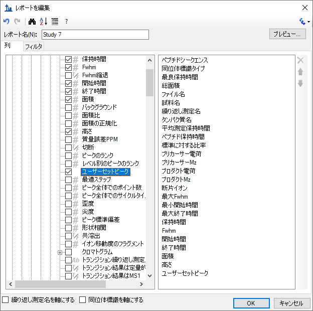
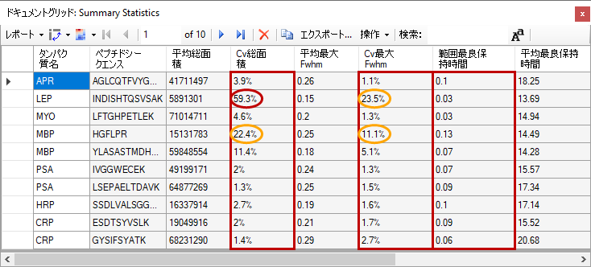
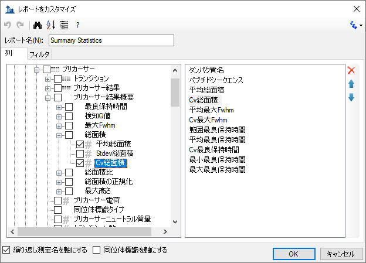
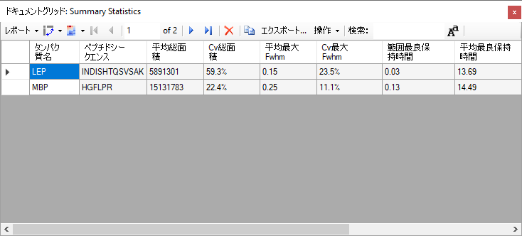
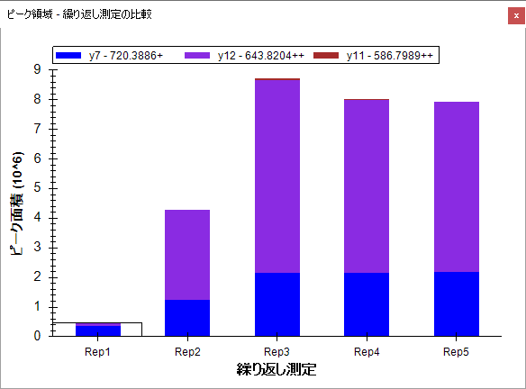
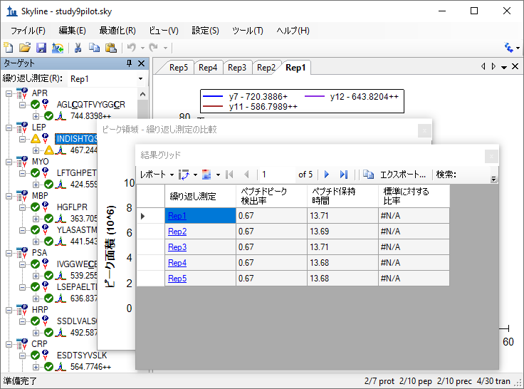
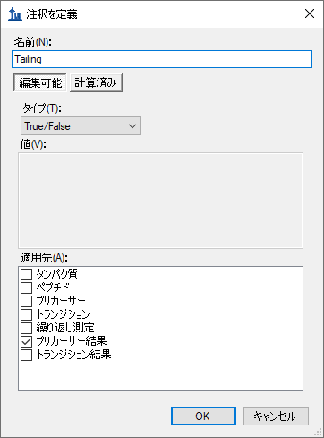
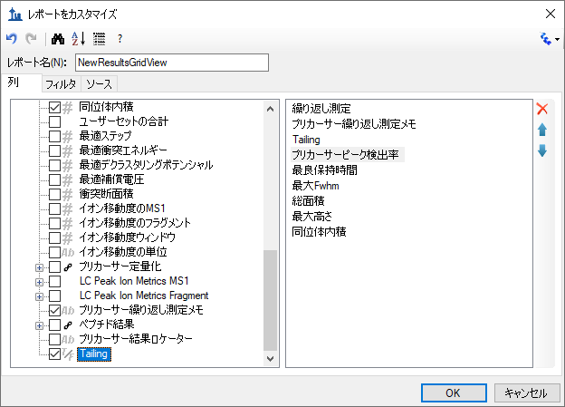

Skylineを用いたターゲットプロテオミクスは、Skylineドキュメントにインポートした質量分析生データからの有益な情報を視覚的に得ることができます。この情報を利用して、測定しているペプチドやトランジションを至適化したり、積分境界を調整したりすることができます。Skylineで作成されたドキュメントからは、多くの計算値と統計結果をExcelやRのようなツールを用いた詳細な分析に適した表形式であるカンマ区切り（CSV）ファイルをエクスポートできます。Skylineの結果およびドキュメントグリッドは、こうした多数の値へのアクセスを可能にし、データ解析の際のユーザー独自の注釈やデータ固有の情報も編集できるようにします。
本チュートリアルでは最初にSkylineのカスタムレポートに焦点を当て、レポートのデザイン、共有、そしてSkylineドキュメントからどのようにして生データや統計結果の要約をエクスポートするのかを学びます。エクスポートされたレポートは、以下のように使用できます。
Skylineの開発にあたっては、ターゲット質量分析研究においてベンダーに依存しないプラットフォームの構築を目指しました。Skylineでは、Agilent、Bruker、SCIEX、島津製作所、Thermo-Scientific、Waters社の装置からのデータが入力されたドキュメントから、類似したカスタムレポートをエクスポートできます。分析装置の種類によらず一貫したレポートを作成できると、異なる装置間の比較や大規模な複数施設間での共同研究が容易になります。
ユーザーの実験に合わせたカスタムレポートの作成方法を理解することは非常に重要であり、このSkylineカスタムレポートのチュートリアルで詳しく説明しています。
本チュートリアルの後半では、カスタムレポートで利用可能な多数のデータフィールドにリアルタイムでアクセスすることを可能にする、Skylineの [ 結果およびドキュメントグリッド ] 表示を中心に説明します。Skylineで質量分析計の測定結果を検証し最適化する際に、結果およびドキュメントグリッドの列をカスタマイズして、重要な値にすぐにアクセスする方法を学びます。また、結果に注釈をつけ、統一的な用語を用いることで、さらなる解釈や他の人と結果を共有して議論するための方法についても学びます。この注釈もカスタムレポートでエクスポートできます。
本チュートリアルを始める前に、次のzipファイルをダウンロードしてください。
https://skyline.ms/tutorials/CustomReports.zip
この中のファイルを、以下の例のようにコンピュータ上のフォルダに解凍します。
C:\Users\brendanx\Documents
すると次の新しいフォルダが作成されます。
C:\Users\brendanx\Documents\CustomReports
この新しいフォルダの中のStudy7_example.skyファイルをダブルクリックして開きます。
または、Skylineの [ ファイル ] メニューの [ 開く ] を利用して開きます。
Study7_example.skyのデータセットは、Clinical Proteomics Technology Assessment for Cancer (CPTAC)コンソーシアムが実施した研究の結果の一部です( T. Addona et al『Multi-site assessment of the precision and reproducibility of multiple reaction monitoring–based measurements of proteins in plasma』、Nature Biotechnology、2009、27、633-641)。この研究は、アナライトのペプチドをさまざまな濃度で作成した検量線や、対応する同位体標識内部標準ペプチドの一定量をスパイクした結果について記述しています。
このSkylineファイルには、あるCPTAC施設で取得されたCPTAC Study 7.2データ（「Study II」と呼ばれるタイトルの論文に記載）の一部が保存されており、LC-MRM-MSにより定量された、濃度範囲を500 fmolから2.92
fmolに変化させた、複数のアナライトタンパク質に由来する10種類のペプチド配列（lightペプチド）の測定結果が入っています（繰り返し測定で、J: 500 fmol、I: 275 fmol、H: 151 fmol、
G: 83 fmol、F: 46 fmol、E: 25
fmol、D: 8.55 fmol。実際は，より低濃度のポイントも測定されていますが、本チュートリアルには含まれていません）。内部標準( IS)のheavyペプチドは、それぞれ50 fmolの一定濃度でスパイクされています。
このデータセットがどのような内容なのかを最初に知るためには、以下の手順を実施します。
各繰り返し測定のピーク面積の棒グラフを示す新しいウィンドウが表示されます。青い棒はこのペプチドのHeavy標識アナライトを表し（常に50 fmolをスパイク）、赤い棒はさまざまな濃度でのLightアナライトを表します（各濃度ポイントは4回の繰り返し測定で取得）。
以下のチュートリアルでは、このようなドキュメントの表示方法や編集方法を説明します。
ただし、本チュートリアルでは、レポートのエクスポートや詳しい統計分析に使用するために、Study7_example.skyドキュメントは、最初に、統合的な事前確認が行われています。以下のチュートリアルに進む前に以下の操作を行います。
それでは、最初のSkylineカスタムレポートテンプレートを作成します。以下の手順を実施してください。
[ レポートをエクスポート ] フォームが表示されます。ここには、デフォルトのSkylineレポートテンプレートが表示されていると思います。
以下の手順を実施して、新しいSkylineカスタムレポートテンプレートの作成を続けます。
フォームは以下のようになります。

フォームは以下のようになります。

上記に示す [ レポートを編集 ]
フォームのフィールドは、明確な階層構造を持つことに注意してください。最上位にあるのはタンパク質固有フィールドで、左のボックスの下部に表示されます（タンパク質名、タンパク質の説明、タンパク質シークエンス、タンパク質メモなど）。その下にある展開された
[ 繰り返し測定 ]
グループには、繰り返し測定名などの一般的なフィールドが含まれています。また、Skylineカスタムレポートにはペプチド固有フィールドがあり、
左のボックスの上部の展開された [ ペプチド
] グループに含まれていることがわかります。この中には、ペプチドシークエンスや平均測定保持時間などがあります。ペプチド固有フィールドには さらに[ ペプチド結果 ]
グループがあり、これはまだ展開されていません。また、[ プリカーサー ] グループも展開されていませんが、ここにもいくつかのプリカーサー固有フィールドがあります。[ プリカーサー結果 ]
グループや、 [ トランジション ] フィールドグループです。[ トランジション ] グループにもトランジション固有フィールドと対応する [ トランジション結果 ]
グループが含まれており、このグループには保持時間、Fwhm、開始時間、終了時間、面積およびバックグラウンドなどの最も詳しいデータが含まれています。上位の結果フィールド値の多くは、このようなデータに由来しています。
[ レポートを編集] フォームで以下の手順を実施し、最初に開いたカスタムレポートテンプレートにフィールドを追加していきます。
以上の操作で[ レポートを編集 ] フォームは以下のようになります。

[ プレビュー ] フォームは以下のようになります。

プレビューは、レポートテンプレートを設計する場合にかなり便利な機能です。レポートをファイルにエクスポートする代わりにこの機能を使うこともできます。ツールバー上のコピーボタン( )は、ヘッダー列を含むすべてのデータをコピーします。また、列ヘッダーの左にある長方形の枠をクリックして [ プレビュー ] フォームのすべての値を選択することもできます。Ctrl+Cキーを押すと、列ヘッダーを除くレポートのすべてがコピーされます。どちらかの方法でデータをコピーしたら、そのデータをExcelなどの別のツールに貼り付けることもできます。
上に示したプレビューでは，繰り返し測定の7_2_D_01および7_2_D_02について、LC-MRM-MS実験で測定した10種類のすべてのペプチドのLight体アナライトとHeavy体アナライトについて最良保持時間および総面積が右側に表示されています。右にスクロールすると、
28回のLC-MRM-MS実験のすべての列が表示できます。右上隅にある四角をクリックして
[ プレビュー ]
フォームを最大化すると、さらに多くの列を表示します。この例では、7_2_D_01および7_2_D_02で、同じLight体アナライト濃度を含む試料から取得されています。したがって、総面積値は近いものになることが予想されます。文字DからJはそれぞれ、異なるLightアナライト濃度を示します。各濃度は、01から04の数字で示される4回のテクニカル反復測定で取得されたものです。Heavyペプチド濃度は、どの試料でも50
fmolで一定です。
右上隅にある「x」をクリックして [ プレビュー ] フォームを閉じ、再び [ レポートを編集 ]
フォームに戻ります。このレポートテンプレートを保存するには、以下の操作を行います。
以下に示すように、レポートテンプレートリストに新しい Overviewレポートテンプレートが表示されます。

今度はSkylineレポートテンプレートリストに新しいOverviewレポートテンプレートが追加されています。[ レポートをエクスポート ] フォームは以下のようになります。

レポートリストで「Overview」を選択し、[ エクスポート ] ボタンをクリックして、[ レポートをエクスポート ]
フォームから、新しいレポートをエクスポートできるようになりました。
ここではフォームを閉じ、オリジナルのSkylineドキュメント表示からプロセスを開始します。
上記のように作成し、プレビューしたレポートをCSVファイルにエクスポートするには、以下の操作を行います。
本チュートリアル用に作成されているCustomReportsフォルダをWindowsファイルエクスプローラーで表示すると、今作成したOverview_Study7_example.csvファイルが表示されます。これを今度はExcelで開き、内容が先ほど表示したプレビューによく似ていることを確認します。ファイルには列ヘッダー名が含まれていますので注意してください。これは [ プレビュー ] フォームを単にコピーして貼り付けただけでは表示されません。
Skylineのレポートテンプレートは非常に柔軟で、管理や変更、共同研究者との共有が簡単にできます。
大規模な複数研究施設が参加する研究に参加していたり、一人の共同研究者と共同作業している場合、またはプロテオミクスコミュニティにSkylineドキュメントの特定のフィールドに依存する独自のカスタムツールを提供する場合、他の人がプロトコルを繰り返すことができるように原稿に補足情報を提供する場合など、カスタムレポートテンプレートを共有したい理由はいろいろあるでしょう。Skylineは複数のベンダーが提供する装置をサポートしているので、共有するレポートテンプレートを使用して、異なる装置を使用する複数施設からデータを収集するのに使用できます。
本チュートリアルで作成したSkylineレポートテンプレートを共有するには、以下の手順を実施します。
Skylineは、以下に示す [ レポートを管理 ] フォームを表示します。

レポートテンプレートが本チュートリアル用に作成されたCustomReportsフォルダの「Overview.skyr」ファイルに保存されます。これであなたが作成した分析ツールを、共同研究者と共有したり、また、原稿の補足データとして使用したりできるようになります。
共有したカスタムレポートテンプレートを他の人がどのように使用するかを理解するには、
まずそのテンプレートを自分のシステムから削除する必要があります。その後、前のセクションで作成した共有レポートファイル「Overview.skyr」を他の人から取得したかのように追加して戻すことができます。
[ レポートをエクスポート ] フォームは、前のセクションで手順を実施した後もまだ開いたままです。Skylineの設定から「Overview」レポートテンプレートを削除するには、以下の操作を行います。
[ レポートを管理 ] フォームは以下のようになります。

リストから「Overview」項目を削除するには、以下の操作を行います。
[ レポートをエクスポート ] フォームは以下のようになります。

本チュートリアルで最初に開いたときとちょうど同じです。
次に、共同研究者が新しいレポートテンプレートをどのようにSkylineにインポートするのかを示してみましょう。以下の手順を実施します。
これらの操作により、「Overview」項目が [ レポートをエクスポート ] フォームの [ レポート ] リストに再び追加されます。これが実際に保存したレポートであることを確認するには、以下の手順を実施します。
Skylineは、本チュートリアルで先ほど確認したのと同じ値を含む [ プレビュー ] フォームを表示します。
もちろん、単純な「Overview」レポートよりも多くのデータを含むレポートを作成できます。これは別の新規レポートテンプレートを作成したり、既存の「Overview」レポートを編集したり、または以下に示すように，「Overview」レポートのコピーを作成してそのコピーを編集することによって行うことができます。「Overview」レポートテンプレートのコピーから新しくより複雑なレポートを作成するには、以下の手順を実施します。
Skylineは、以下のように、「Overview」レポートテンプレートですでに追加したフィールドをもつ [ レポートを編集 ] フォームを表示します。

この新規レポートテンプレートのレポート名は、まだ指定されていません。レポート名をここで指定するには、以下の操作を行います。
以下に説明するように、各フィールドの横にあるチェックボックスをクリックして、そのフィールドを[ レポートを編集 ] フォームの右側にあるレポートテンプレートの列リストに追加し、フィールドを追加していきます。
これでレポートテンプレートには、元の「Overview」レポートテンプレートよりも多くの詳細が含まれるようになり、[ レポートを編集 ] フォームは以下のようになります。

この新規レポートテンプレートのフィールドを並べ替えるには、以下の操作を行います。
このようにして、一番右にある上下の矢印ボタンを使用して自分に最適な順序に並べ替えることができます。また、矢印ボタンの上にある「X」ボタンを使用するか、左側にあるリストでチェックマークをオフにすると、誤って追加してしまったフィールドを削除できます。
本チュートリアルでは、列リストにこれ以上変更を加えずに続けます。
作成したレポートテンプレートの現在のドキュメントの値をプレビューするには、以下の操作を行います。
このデータのように、各ペプチドにLightアナライトと対応するHeavy同位体標識内部標準の両方が存在する場合は、こういったペアのプリカーサーがすべて一行になっているデータを使用して作業すると、一致するトランジション値をより容易に比較できて便利なことがあります。
「Study 7」レポートテンプレートにこの変更を加えるには、以下の操作を行います。
一致するLightおよびHeavyトランジションの値すべてが同じ行に追加されています。これを達成するために新しい列が追加されており、同位体標識タイプに固有の列には「light」と「heavy」のプレフィックスが表示されています。
[ プレビュー ] フォームが下記に表示されています。ここでは、「light」列名と「heavy」列名を両方示すために下にスクロールされています。

「heavy同位体標識タイプ」列にはすべての行に「heavy」が表示されており、「light同位体標識タイプ」列にはすべての行に「light」が表示されていることに気づかれるかもしれません。列を軸にすると、列リストに含むように追加することはありません。[
プレビュー ]
フォームを閉じ、以下の操作を行ってこのレポートから [ 同位体標識タイプ ] フィールドを削除します。
もう一度 [ プレビュー ] ボタンをクリックすると、[ light同位体標識タイプ ] と [ heavy同位体標識タイプ ] の両列が削除されたことが確認できますが、本チュートリアルでは、以下の操作を行って作業した内容を保存します。
これで [ レポートをエクスポート ] フォームに戻ります。フォームは以下のようになります。

ここで、つぎに「Study 7」レポートをCSVファイルへエクスポートします。このレポートを選択し、[ エクスポート ] ボタンをクリックするか、[ 共有 ] ボタンをクリックしてこの新しいレポートを共有するファイルを作成します。ただし、本チュートリアルでは以下の操作を行います。
ここまでは、ドキュメントで指定されたペプチドおよびトランジション繰り返し測定に対してSkylineが提供する値を基に、レポートを作成してきました。Skylineはまた、インポートされたすべての繰り返し測定において、レポートフィールドに要約統計量を提供できます。この要約フィールドは、繰り返し測定した品質管理（QC）測定について再現性と変動係数（CV）を示すことで、品質管理を行うことに適しています。Skylineレポートテンプレートは、ピーク面積、FWHM、保持時間などのキー・パラメーターの繰り返し測定値の平均値やCVを考慮して設計できます。
本チュートリアルは、Skylineにインポートする要約レポートテンプレートを提供しますが、そのような要約レポートテンプレートを [ レポートを編集 ] フォームでどのように作成するかについても説明します。
まずは以下の操作を行って新規ドキュメントを開きます。
このファイルには2箇所のCPTAC施設で全10回のLC-MRM-MSランで取得されたデータが含まれており、22個のアナライトペプチドが5回のランすべてに50 fmolの一定濃度で注入しています。このようなデータセットは、繰り返し測定の再現性を評価するために使用できます。チュートリアルでは、まずライブレポートから作業を開始し、そのレポートを使ってドキュメントを見ていきます。このためには、レポートをエクスポートではなくドキュメントグリッド機能を使用します。
主要品質管理測定のデータを表示するには、以下の手順を実施します。
「Summary Statistics」という名前の新しいレポートがレポートのリストに追加されており、
[ レポートを管理 ] フォームは以下のようになります。


[ Summary Statistics ] を選択すると、[ ドキュメントグリッド ] は以下のようになります。

このレポートは、Study9pilot.skyファイル内にある5回の同じ試料の繰り返し測定インジェクションで取得されたデータが、FWHMがほぼ5%未満のCV値、また、ペプチドの総面積が10%未満のCV値をもつことを示しており、それらは赤いボックスでかこまれて示されています。さらに、[ 範囲最長保持時間 ] と呼ばれる列（赤いボックス）は、5回の繰り返し測定インジェクションにおけるすべてのペプチドの保持時間のドリフトを分単位でリストにしています。この場合は、保持時間ドリフトは非常に小さなものでした（0.15分未満、10秒未満）。
この要約レポートを使用すると、早期に品質管理の問題を知ることができ、重要な試料の測定に深刻な影響を及ぼすことを事前に避けることができます。いま見ているデータセットでは、HPLCおよびMSは許容できる振る舞いをしているように見えます。しかし、ペプチドINDISHTQSVSAK（タンパク質LEPからのもの）は、総面積のCV値が59.2%、FWHMのCV値が23.5%（赤丸で囲われている）となっており、その他すべてのペプチドとは大きく異なっています。
以下の操作を行うと、特定の基準に一致する行のみを表示するようにこのレポートにフィルタを追加できます。
[ レポートをカスタマイズ ] フォームは以下のようになります。

このレポートに新しいフィルタを定義するには、以下の操作を行います。
[ レポートをカスタマイズ ] フォームは以下のようになります。

[ Cv総面積 ] 列が [ ドキュメントグリッド ] でパーセンテージとして表示されても、[ フィルタ ] タブでは、数字「20%」は「0.2」と表示されます。

INDISHTQSVSAKペプチドをもう少し詳しく調べるには、以下の操作を行います。
全5回繰り返し測定の総ピーク面積と各トランジションの割合が [ ピーク面積 ]
に表示され、要約レポートプレビューのCV値で示された問題を明確にすることができます。比較するには、その他のいくつかのペプチドを選択してください。要約レポートプレビューでこれらのペプチドの[ Cv総面積 ]
値がかなり低かったことからもわかるように、[ ピーク面積 ] 表示でピーク面積の再現性がより明確に示されることがわかります。これらのペプチドの大部分のCV値が10%未満でした。

Skyline自体も強力な視覚的表示で問題の原因を探すことができますが、Skyline要約レポートを品質管理データと共に使用すると、問題を早期に知ることができます。
場合によっては、Skylineチャートで表示される生データにすぐアクセスするために、データを編集中に、レポートで表示される一部の値を確認したいこともあるでしょう。Skylineの [ 結果グリッド ]
表示は、カスタムレポートで利用可能な多数のデータフィールドへのリアルタイムアクセスを可能にします。本チュートリアルのこのセクションでは、Skylineで質量分析計出力を精査し最適化しながら、[ 結果グリッド ]
を使用して重要な値にすぐにアクセスし、
データに注釈を付けて、研究者としての洞察を得る方法を学びます。
[ 結果グリッド ] 表示を使い始めるには、以下の操作を行います。
Skylineは、以下のようになります。

今度は以下の操作を行ってウィンドウを見やすく並べ替えます。
これにより以下のようなSkylineの画面が表示されます。

Skylineは、データのナビゲーション時にチャートと [ 結果グリッド ] の同期を維持します。[ 結果グリッド ] のその他の行いずれかをクリックすると、Skylineはアクティブなクロマトグラムの繰り返し測定タブを変更します。また、[ ピーク面積 ] グラフでバーを選択している長方形の枠が変更され、[ ターゲット ] 表示の上部にある [ 繰り返し測定 ] リストの選択も変更されます。
[ 結果グリッド ] の選択行など、その他の表示が更新されます。
[ 結果グリッド ] の [ 繰り返し測定 ] 列の右側にある最初の列は、[ プリカーサー繰り返し測定メモ ] です。この列では、選択されたプリカーサーおよび繰り返し測定の [
プリカーサー結果 ]
フィールドグループに自由なテキストメモを記入し関連付けることができます。
[ 結果グリッド ] は以下のようになります。

現在の [ 結果グリッド ] 表示のその他すべての列はSkylineによって計算され、編集はできませんが、どの列をどの順で表示するかは変更できます。列の中には、上記画像ではスクロールしないと表示されないものもあります。表示されるプリカーサー結果列の数を少なくするには、以下の操作を行います。
以下の操作を行うと、その他のプリカーサーの結果を確認できるようになります。
最後に、プリカーサーを展開するとトランジションの確認ができます。同じ方法を適用すると、
トランジション用に表示される列をカスタマイズできます。ここでは、本チュートリアルの最後のセクションまで継続し、[ 結果グリッド ]
で管理可能なカスタム注釈を追加し、後でSkylineレポートをエクスポートする方法を学びます。
Skylineは、3種類のカスタム注釈をサポートしています。
最後の2種類の注釈を使用すると、データを処理している間に管理用語で情報が収集できます。これは後でSkylineレポートでエクスポートし、他のツールを用いた統計分析の入力として使用できます。
簡単で新しいTrue/False注釈を定義するには、以下の手順を実施します。
[ 注釈を定義 ] フォームは以下のようになります。

ここで注釈を保存し、以下の操作を行ってドキュメントに注釈を追加します。
[ ドキュメント設定 ] フォームは以下のようになります。

[ 結果グリッド ] のカスタム表示には新しい [ Tailing ] 列が表示されませんが、これは追加できます。
[ レポートをカスタマイズ ] フォームは以下のようになります。

新しい [ Tailing ] 列が、[ 結果グリッド ] の [ プリカーサー繰り返し測定メモ ] と [ プリカーサーピーク検出率 ] との間に追加されます。
これでSkylineウィンドウは以下のようになります。

このドキュメントにあるピークは多くの問題があるとはいえませんが、ここで見えているピークは少し尾を引いています。「Rep1」行の新しい [ Tailing ] 列のチェックボックスをオンにします。他の5行それぞれに対する選択を変更します。尾を引いているのは考慮すべきであるかどうかを判断し、考慮すべきであると判断すればチェックボックスをオンにします。プリカーサーツリーで選択されている項目を変更し、「564.7746++」プリカーサーに戻って変更が記録されているかどうかを確認します。
これでSkylineカスタムレポートで新しい [ Tailing ] 注釈をエクスポートできます。これは [ プリカーサー結果 ] フィールドグループに表示されます。
本チュートリアルでは、あなたが、Skylineターゲット質量分析法ドキュメントにある多くの値にアクセスすることを可能にする、Skylineの柔軟なカスタムレポートを紹介しました。これらのレポートは、Skyline内のデータ分析から、R、Matlab、Java、C++でコード化されたカスタムプログラムやExcelを使用したより複雑な統計分析への移行を円滑にします。また、これらのレポートテンプレートを通して利用可能であり、データ品質に関する指標を迅速に提供可能な要約統計量について学びました。カスタムレポートテンプレートは共同研究者と共有したり、発表論の補足資料として共有したりすることができ、Skylineが複数のベンダーをサポートしていることを活用して、他の人が異なる装置でも新しいデータセットで同じ分析を繰り返せるようにしています。最後に、Skylineの結果グリッドを使用して、Skylineレポートで利用可能な多数の値にすぐにアクセスし、カスタム注釈を使用して作業し、豊富な新しい情報をドキュメントに追加できるようにする方法を学びました。今までこれらの機能を認識していなかったのであれば、Skylineで実現可能な実験範囲を確実に広げることができるでしょう。
利用可能な列に関する説明はSkyline自体に用意されています。マウスを [ ドキュメントグリッド ] または [ 結果グリッド ] の列にかざすことで、列を説明するツールヒントが表示されます。また、[ レポートをカスタマイズ ] フォームのツールバーには「?」ボタンがあり、利用可能なすべての列を説明するページが表示されます。この説明ページは、[ ヘルプ ] > [ ドキュメンテーション ] > [ レポート ] でも表示できます。
また、行をグループ化してまとめて統計を実施することもできます。この機能の使用例については、以下のページを参照してください。